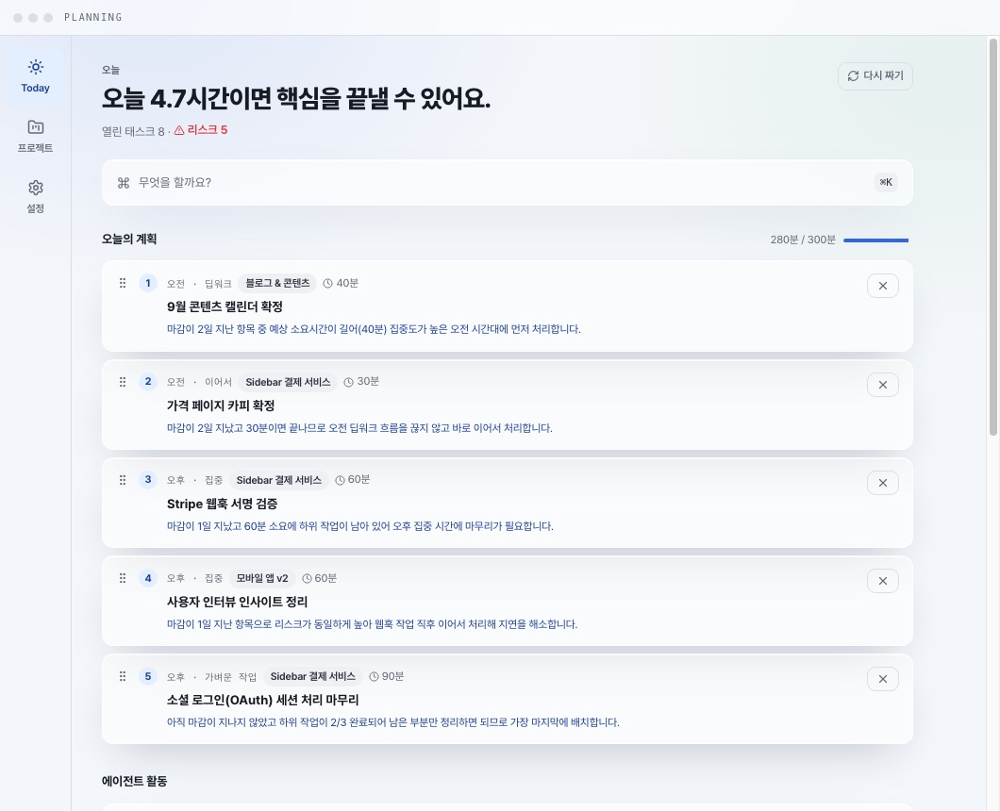
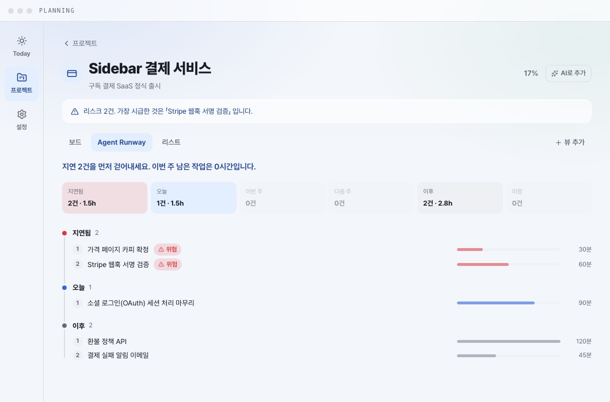
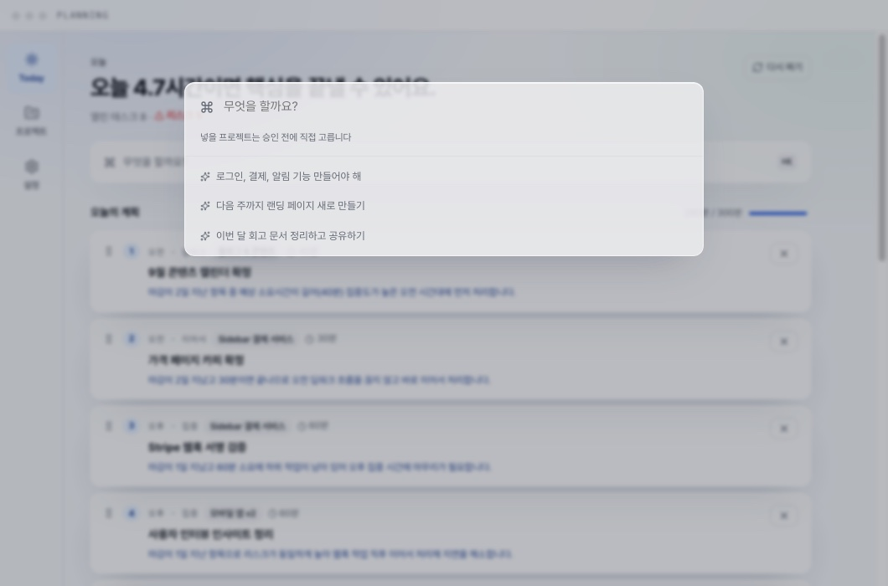

프로젝트를 둘 이상 굴리는 한 사람을 위한 macOS PM 앱. 보드를 채우는 건 내 일이 아니다. 앱을 열면 오늘의 순서가 이미 놓여 있고, 블록마다 왜 그 순서인지가 한 줄로 붙어 있다. 서버도 계정도 없이, 데이터는 ~/.planning 한 파일에서 끝난다.

일반 PM 툴은 내가 채워야 움직인다. Planning 은 반대다. 앱을 열면 에이전트가 오늘 손댈 순서를 이미 놓아 두었고, 나는 읽고 승인하거나 끌어서 바꾼다. 아래는 실제 화면에 나온 그대로다.
마케팅 문구가 아니다. 세 약속은 데이터베이스 제약으로 강제되어 있어서, 어기는 상태가 저장되지 않는다.
앱을 열면 오늘의 순서가 이미 놓여 있다. AI 프로바이더를 안 붙여도 규칙 기반 플래너가 채운다.
모든 계획 블록에 왜 그 순서인지가 한 줄로 붙는다. 근거가 비어 있는 블록은 저장 자체가 안 된다.
에이전트가 한 일은 전부 활동 스트림에 남고, 언제든 이전 상태로 복원된다. 하위 태스크 분해도, 순서 재배치도.
날짜 눈금이 있는 간트를 버렸다. Agent Runway 는 세로 척추 위에 여섯 레인을 놓는다. 한 사람이 여러 프로젝트를 굴릴 때 필요한 답은 마감일 목록이 아니라, 지금 무엇에 손을 대야 하는가다.
날짜 축 위에 막대를 늘어놓는다. 마감은 보이지만, 오늘 뭘 먼저 해야 하는지는 내가 계산해야 한다.
지연된 것부터 앞에 세운다. 레인 위의 한 줄 요약이 이번 주 남은 작업 시간을 바로 말해 준다.

⌘K 를 누르고 자연어로 적는다. 에이전트가 태스크로 분해해 보여 주고, 항목마다 근거·예상 소요·배치 시점이 붙는다. 내가 승인하기 전에는 데이터베이스에 한 줄도 쓰지 않는다.
"로그인, 결제, 알림 기능 만들어야 해" 정도면 된다. 프로젝트를 고를 필요도 없다.
태스크 목록이 제안으로 온다. 항목마다 왜 이렇게 나눴는지, 몇 분 걸릴지, 오늘·이번 주 중 어디에 놓을지가 붙는다.
승인한 항목만 계획에 들어간다. 마음에 안 들면 닫는다. 남는 건 없다.

프로바이더를 하나도 붙이지 않아도 앱은 완결된다. 붙이면 근거 문장과 분해가 더 정교해질 뿐이다.
마감·우선순위·진행률·예상 소요를 읽어 오늘의 순서를 짠다. 키 없이, 네트워크 없이 돈다.
터미널(MCP)에서 계획을 읽고 제안을 놓을 수 있다. 제안은 앱에서 승인해야 계획에 들어간다.
서버도 계정도 없다. 데이터는 전부 내 머신의 ~/.planning 에 남는다.
# 1. dmg 를 받아 Applications 로 옮긴다 Planning-0.1.2-arm64.dmg · macOS Apple Silicon · 서명·공증 · 자동 업데이트 내장(이후 버전은 앱이 알아서 받습니다) # 2. 열면 바로 오늘의 계획이 놓여 있다 (규칙 기반) ~/.planning/planning.sqlite · 데이터는 이 파일 하나 # 3. 선택 · AI 프로바이더를 붙이면 근거와 분해가 더 정교해진다 설정 → AI → Anthropic | OpenRouter | 자체 게이트웨이 · 키는 OS 자격증명 저장소에